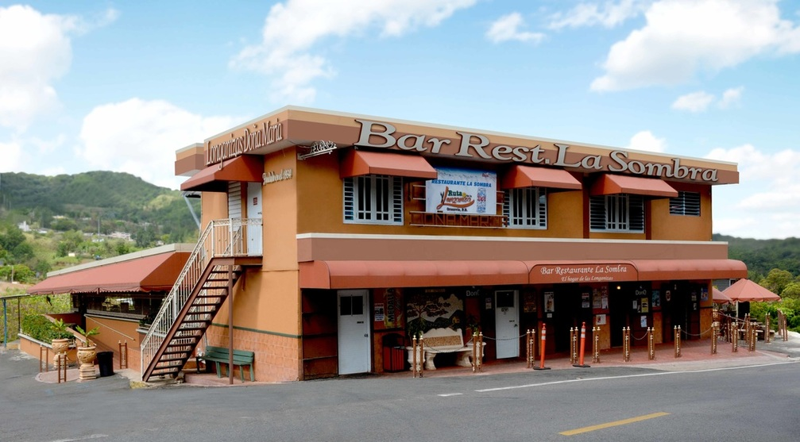
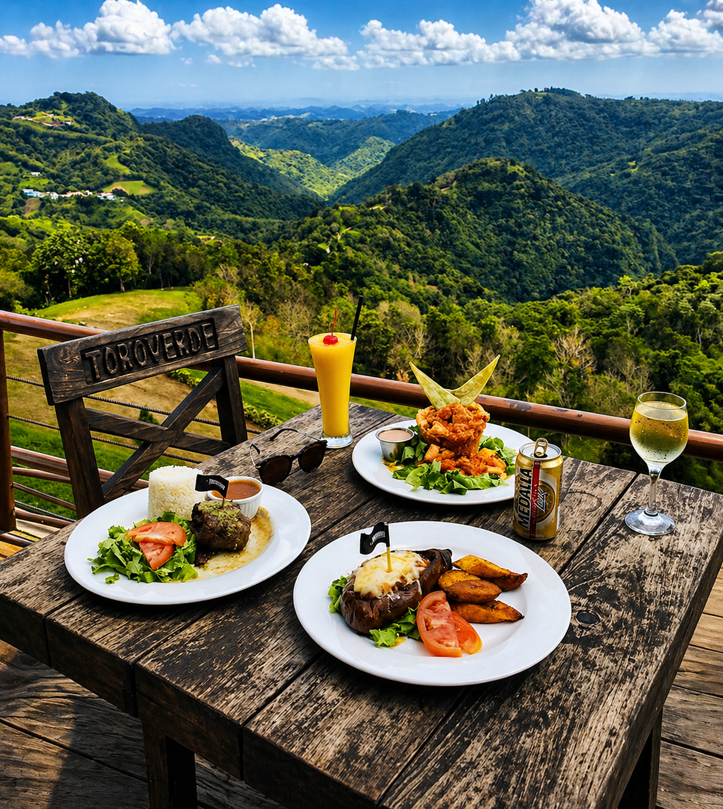
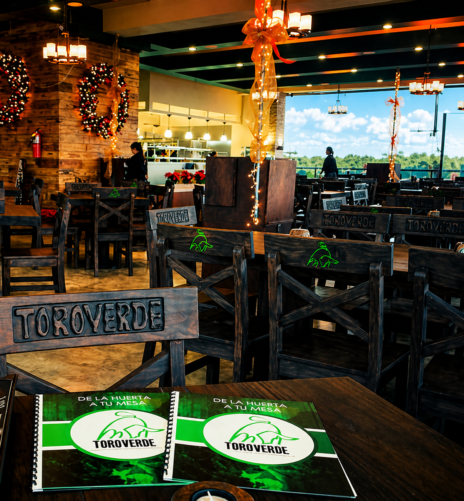
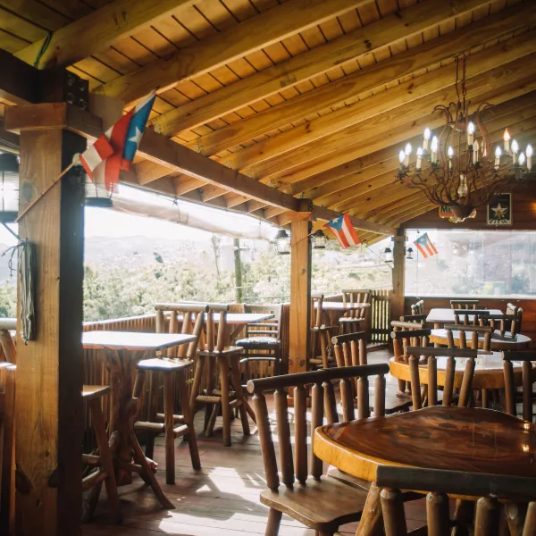

Restaurante La Sombra y Longaniza Doña María
Una parada reconocida por sus longanizas de cerdo, pollo, pescado y combinaciones criollas. Es uno de los nombres más conocidos de la ruta gastronómica de Orocovis.
Ver más


Orocovis es famoso por la longaniza, un embutido criollo que se sirve con tostones, arroz con habichuelas, mofongo y otros acompañantes tradicionales. La Ruta de la Longaniza atrae visitantes que desean probar diferentes sazones en restaurantes y chinchorros de montaña.
Además de la longaniza, el pueblo ofrece comida criolla, cafés, postres caseros y lugares con vistas hacia la Cordillera Central.


Una parada reconocida por sus longanizas de cerdo, pollo, pescado y combinaciones criollas. Es uno de los nombres más conocidos de la ruta gastronómica de Orocovis.
Ver más
Ubicado en el parque de aventura, combina platos locales con una terraza que mira hacia las montañas. Es una opción popular antes o después de las tirolesas.
Ver más
La ruta incluye restaurantes y chinchorros a lo largo de carreteras de montaña. El plato principal es la longaniza preparada con sazón local.
Ver más